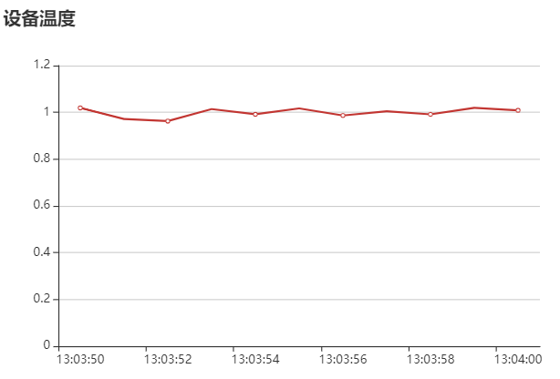
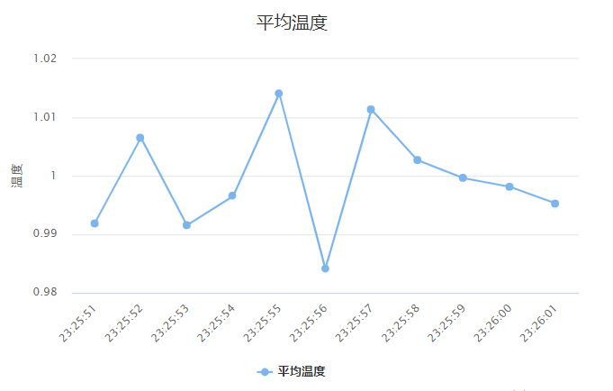

使用 chart 组件展示数据
1.1. 概述
数据图表前端组件在物联网和实时监控的场景有非常广的应用，当前比较流行的有 Echarts、HighCharts 等组件。本文主要讲解如何利用 DolphinDB 的 Web 数据接口，结合 JavaScript 使用前端组件来展示 DolphinDB 中的数据。
1.2. 接口数据格式分析
DolphinDB 提供了基于 HTTP 协议的接口，可以通过 HTTP post方式提交查询语句并返回 JSON 格式的结果。具体信息可以参考DolphinDB WebApi。
从文档中可以了解，DolphinDB 的返回数据格式是列式的 JSON 字符串，一个单表返回 JSON 如下：
{
"sessionID": "3691974869",
"userId": "admin",
"resultCode": "0",
"msg": "",
"object": [{
"name": "",
"form": "table",
"size": "11",
"value": [{
"name": "second_time",
"form": "vector",
"type": "second",
"size": "11",
"value": ["13:03:50", "13:03:51", "13:03:52", "13:03:53", "13:03:54", "13:03:55", "13:03:56", "13:03:57", "13:03:58", "13:03:59", "13:04:00"]
}, {
"name": "ec",
"form": "vector",
"type": "double",
"size": "11",
"value": [1.019094, 0.971753, 0.962792, 1.014048, 0.991746, 1.016851, 0.98674, 1.00463, 0.991642, 1.018987, 1.008604]
}]
}]
}Echarts 前端组件所需的数据格式：
option = {
xAxis: {
data: ["13:03:50", "13:03:51", "13:03:52", "13:03:53", "13:03:54", "13:03:55", "13:03:56", "13:03:57", "13:03:58", "13:03:59", "13:04:00"]
},
yAxis: {
type: 'value'
},
series: [{
data: [1.019094, 0.971753, 0.962792, 1.014048, 0.991746, 1.016851, 0.98674, 1.00463, 0.991642, 1.018987, 1.008604],
type: 'line'
}]
};从两者的结构来看，只需要将 DolphinDB 的返回结果稍作转换即可满足 Echarts 的数据格式规范。而且使用 DolphinDB 的 WebApi 开发包可以让这个过程变得更加简单。
1.3. Echarts 代码示例
本例通过在 DolphinDB 结合 Echarts 展示如下场景：工厂有 10 台设备，每一毫秒采集温度值数据并写入 DolphinDB 分布式数据表中，然后在网页中展示出每秒钟平均温度线状图。示例中的样本数据为持续采集 10 秒钟的数据，通过模拟脚本生成。
- 使用 DolphinDB 脚本模拟生成样本数据
data = table(100000:0, `devId`time`ec,[INT,TIMESTAMP,DOUBLE]); data.tableInsert(take(1..10,10000),add((1..10000),now()) , norm(1,0.5,10000)) share data as iotTable
JavaScript 脚本做的主要工作是从 DolphinDB 获取数据，并转换为 Echarts 所需的格式。这里使用了 DolphinDB JavaScript 的接口开发包，从GitHub下载，并引入DolphinDBConnection.js和DolphinDBEntity.js两个 js 文件。
var conn = new DolphinDBConnection('http://localhost:8848');
//向DolphinDB发送查询脚本，并获取返回的数据
conn.run("select avg(ec) as ec from iotTable group by second(time)", function(re){
if(re.resultCode&&re.resultCode=="1"){
alert(re.msg);
} else {
jobj = new DolphinDBEntity(re).toVector();//将返回结果转换成列数据
var time = jobj[0].value;
var ecdata = jobj[1].value;
var option = {
title: {
text: '设备温度'
},
xAxis: {
data: time
},
yAxis: {},
series: [{
name: '温度',
type: 'line',
data: ecdata
}]
};
myChart.setOption(option);
}
});代码运行的结果如图所示：

- 完整的 Echarts 实现脚本如下，本例中需要引入 jQuery 库
<!DOCTYPE html>
<html>
<head>
<meta charset="utf-8">
<script src="jquery-1.9.1.min.js"></script>
<script src="DBConnection.js"></script>
<script src="DolphinDBEntity.js"></script>
<script src="http://echarts.baidu.com/gallery/vendors/echarts/echarts-all-3.js"></script>
</head>
<body>
<div id="main" style="width: 600px;height:400px;"></div>
<script type="text/javascript">
var myChart = echarts.init(document.getElementById('main'));
var conn = new DolphinDBConnection('http://localhost:8848');
//向 DolphinDB 发送查询脚本，并获取返回的数据
conn.run("select avg(ec) as ec from iotTable group by second(time)", function(re){
if(re.resultCode&&re.resultCode=="1"){
alert(re.msg);
} else {
jobj = new DolphinDBEntity(re).toVector();//将返回结果转换成列数据
var time = jobj[0].value;
var ecdata = jobj[1].value;
var option = {
title: {
text: '设备温度'
},
xAxis: {
data: time
},
yAxis: {},
series: [{
name: '温度',
type: 'line',
data: ecdata
}]
};
myChart.setOption(option);
}
});
</script>
</body>
</html>1.4. HighCharts 代码示例
使用 HighCharts 展示 DolphinDB 数据的方式与 Echarts 类似，下面直接给出完整的脚本示例供参考：
<!DOCTYPE html>
<html>
<head>
<meta charset="utf-8">
<script src="http://code.jquery.com/jquery-1.12.4.min.js" integrity="sha256-ZosEbRLbNQzLpnKIkEdrPv7lOy9C27hHQ+Xp8a4MxAQ=" crossorigin="anonymous"></script>
<script src="DolphinDBConnection.js"></script>
<script src="DolphinDBEntity.js"></script>
<script src="http://cdn.highcharts.com.cn/highcharts/highcharts.js"></script>
<script src="https://code.highcharts.com.cn/highcharts-plugins/highcharts-zh_CN.js"></script>
</head>
<body>
<div id="main" style="width: 600px;height:400px;"></div>
<script type="text/javascript">
var conn = new DolphinDBConnection('http://localhost:8848');
//向 DolphinDB 发送查询脚本，并获取返回的数据
conn.run("select avg(ec) as ec from iotTable group by second(time)", function(re){
if(re.resultCode&&re.resultCode=="1"){
alert(re.msg);
} else {
jobj = new DolphinDBEntity(re).toVector();//将返回结果转换成列数据
var time = jobj[0].value;
var ecdata = jobj[1].value;
var option = {
chart: {
type: 'line'
},
title: {
text: '温度'
},
xAxis: {
categories: time
},
yAxis: {
title: {
text: '温度'
}
},
series: [{
name: '平均温度',
data: ecdata
}]
};
var chart = Highcharts.chart('main', option);
}
});
</script>
</body>
</html>代码运行的结果：

1.5. 总结
从上述示例可以了解，通过 DolphinDB database 的 WebApi 开发包，Echarts 与 HighCharts 等组件与 DolphinDB 集成展示数据是非常方便的，其他前端 chart 组件与 DolphinDB 的集成，均可以参考本文方式实现。